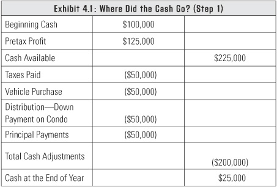
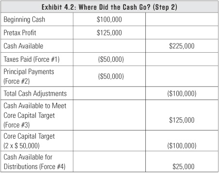
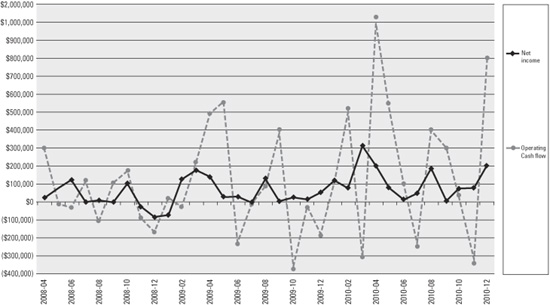

Cash is the most powerful opportunity magnet ever created.
Typically, entrepreneurs like yourself don’t really understand where your profits go. You think, “Hey, I made $100,000, so shouldn’t I see $100,000 in the bank?” I can’t tell you where every dollar went, but the money’s gone because you’ve either spent it, bought some assets and then sold them, or bought some assets and kept them. Accounting is a closed system. For every debit there’s a credit.
When some of this spending is taking place, people don’t really think about what they’re doing with their money. That’s why I like to talk about the four forces of cash flow. Understanding these forces is a major step in preventing what I call cash cow disease. Remember, your goal is to keep your cow healthy so you regularly get milk (profits) from it.
Unfortunately, the four forces of cash flow are probably in the opposite order of what you’d like them to be, but we all have to accept the fact that taxes are the top priority. The four forces of cash flow are as follows, in this order:
Here’s a classic example of what happens: You start the year having $100,000 in cash. That’s not an insignificant sum, if we’re talking about a $1 million (or less) business. Then assume you had a pretax profit of $125,000. That’s a good profit number; it’s 12.5 percent. So how is it that you have only $25,000 of cash available at the end of the year after paying $50,000 in taxes ($125,000 x 0.40)?
After thinking about it, you realize, Oh, yeah, I did buy a $50,000 SUV for the business. I bought it right at the end of the year to save some money on my taxes. A whole series of “Oh, yeah” moments follow as you realize you made a $50,000 down payment on a condo and you made $50,000 in principal payments on a line of credit. Then you understand that you went from $100,000 in cash to $25,000 because you either spent the money or repaid what you borrowed. Exhibit 4.1 contains the math.

A better approach would have been to start with the $100,000 cash and add your pretax profit of $125,000 for the year (total cash available of $225,000). Then pay your taxes (force #1) of $50,000 and repay the loan (force #2) of $50,000. This leaves you $125,000 before you calculate your core capital target (force #3). This is usually referred to as working capital, but after studying it I realized that a better name is core capital target. Your core capital target is simply this: two months of operating expenses in cash and nothing drawn on a line of credit. In this example, your company’s core capital target is $100,000 (two months of operating expenses). That means you have $25,000 available for distributions (force #4). You know what this means, right? You shouldn’t have bought the $50,000 SUV or put $50,000 down on a condo. Exhibit 4.2 contains the corrected math.

Looking at this calculation—and knowing what it means—helps give you the courage to make the right choices. Having the data allows you to quantify it and say you’re not going past a specified red line. If you do go past it, you know you’re making a really bad choice. In fact, you’ve stepped into dangerous territory.
Let’s take a look at how all of these forces work together. Then I’ll go through each one and explain it in detail. Notice that taking distributions is at the bottom of the list. For clarity, let’s define distributions as a draw against the equity of the business. Entrepreneurs make these distribution payments in a number of different ways. One of the sloppiest things you can do is try to live off distributions. I’ve seen clients write checks for groceries, new furniture, home mortgage payments, and their children’s education. How serious is this from a tax standpoint? It depends on what type of legal entity you are. If you’re an LLC, this isn’t so bad because those are just distributions. But if you’re an S corporation, this is potentially bad because the IRS will say it really should be salary. Either way, you’re taking income out of the business and you don’t have a formal methodology in place. You’re spending the money but not actually calling it a distribution.
The other problem you run into—and this applies to LLCs, S corporations, and C corporations—is that lawyers will say you’re damaging the legal protection of your business. This is called piercing the corporate veil, and you’re making yourself legally vulnerable as an individual. In almost thirty years of practice, I’ve dealt with this problem only a few times, but you need to know that piercing the corporate veil is a real issue and can give you legal problems.
I’ll talk about this issue more in chapter 5, but for now it’s enough to say the best methodology is to manage your personal expenses so you can take care of your business and not live off distributions. Remember, it’s about keeping your cow (your business) healthy. It probably won’t take as long as you think before you can pay yourself a market-based salary. At my practice we’ve been able to forecast that date. In many cases businesses are fully capitalized in twelve to eighteen months, and the owners can start paying themselves a market-based wage. Knowing a tentative date will give you the courage to hang on until that day comes. When it’s some unknown date in the future, people are tempted to live off the business prematurely.
There’s another reason you don’t want to live off your business before it’s viable. You want to make sure that you are in a position to cash out of your business.
Entrepreneur: I’ve been told that you should always have your business prepared to sell. Is this true?
Greg: Yes. And guess what? If you’ve worked off the books and done some of these monkey business things, then you’re not in any condition to show your financials to a potential buyer.
A savvy buyer will know if your numbers are lying. Don’t compromise your ability to sell your business by making questionable distributions or paying personal bills with company funds.
In the previous chapter, we looked at graphs of profit versus cash flow for various pretax profit levels. I frequently show my clients the graph in exhibit 4.3 because it shows a true comparison of net income and operating cash flow.
Your operating cash flow starts with your net income for the month; then you add back the difference in the changes in accounts receivable, accounts payable, and inventory (if applicable). You can see that there’s a significant disconnect between pretax profit and operating cash flow, and there are big waves in the operating cash flow. This graph looks almost the same in every single business I work with. I’d like to see businesses never go below zero in any one month, but even in my own business, that’s not always practical. We have significant heavy times of the year because of tax filing deadlines and some other project deadlines.
Exhibit 4.3: Net Income Versus Cash Flow

We’ve been able to make our income more consistent across a twelve-month period because of the monthly business consulting work we do, but for the most part we still have peaks and valleys, as do all businesses.
If you want to be debt free, you need to know how far below zero your operating cash flow is at its worst. In this particular example, the worst downstroke is almost $400,000, so this company’s core capital target is $400,000. In almost every case where I monitor this, the worst downstroke is roughly the two months of operating expenses. The way the banking market is today, they can’t be certain they’d be able to finance $400,000 if they needed to.
First and foremost, you have to pay your taxes. Every entrepreneur wants to flip taxes to the bottom of the Forces of Cash Flow list. Maybe you had a big month and you want to reward yourself with a trip or a convertible. But before you spend money on anything, you have to set the taxes aside. This is one of the most important things I tell my clients who are on a cash-basis accounting system.
Whenever possible, I recommend cash-basis accounting because there’s a much tighter correlation between the cash in your hands and paying taxes on that cash. There are a few rare circumstances when it’s better to be on the accrual system, such as a business that gets paid up front for something. But that doesn’t happen very often. Even if your customers pay you up front, if your accounts receivable are usually larger than your accounts payable, then you should be on a cash basis. The only time you want to be on an accrual system is if your accounts receivable are consistently lower than your accounts payable. An interesting thing to note about C corporations is they have a requirement to become accrual based at some point. Conversely, S corporations and LLCs can remain on a cash basis no matter how large they get. However, if you have inventory, you are generally required to be on an accrual basis, no matter what type of legal entity you are.
The key with paying taxes is timing. That’s where most of my peers in the accounting world fall short. They wait until the year is over and leave you with only bad options. By this time you’ve bought that convertible, and then you have to round up the money for taxes. You either have to borrow the money or sell some assets for less than what you paid for them. Worse, you have to accept an installment agreement with the IRS, which is not exactly my lender of choice.
In most cases, this is my philosophy: Don’t pay taxes until you absolutely have to without incurring a penalty. Until you pay the taxes, you have to set the money aside and get it out of your financial calculations so you know it isn’t yours to spend.
You can’t build wealth until you get out of debt. And make no mistake, getting out of debt really does help you build wealth.
People realized gains during the real estate bubble, but I didn’t think the property values made sense. I told my clients to sell the property, get out of debt, and gain a better equity position. Soon after, the real estate market went into a tailspin. Quite a few clients heeded my advice and survived. Others have faced short sales or are hanging on in hopes of a better day. People who take a low- to no-debt approach can handle bad economic news because they live more stable and productive lives. I have clients who are doing quite well—even in the midst of a struggling economy—because they’ve stuck to this principle.
There are two types of debt: lines of credit and term debt. For entrepreneurs, credit lines are the equivalent of crack cocaine—it’s that addictive. Why? Because when you draw money on a line of credit, you’ve postponed a hard business decision that should have been made a lot sooner. Sometimes people would rather exhaust their resources than make the hard decisions.
A true line of credit is one that goes to zero for at least thirty consecutive days in a twelve-month period. If you’re not doing this, you have what’s referred to as an evergreen loan. Bank officers look at this and know you’re just one bad business cycle away from needing to make an arrangement to pay off your debt.
I don’t want you to have anything drawn on your line of credit. If you can be debt free, I’m all for it. But I know there are things you need. For instance, if you need a vehicle for work and you want to buy a Mercedes, I’m not wild about that. But at least it’s financed with term debt (a fixed monthly payment over specific period of time) and you can depreciate the cost over the life of the asset (and we consider it part of your market-based wage calculation).
If a new piece of equipment is absolutely essential to the production of the business, I’d rather you pay cash for it. But if you need to buy a piece of production equipment and you know how much productivity and sales you’ll get from it, go ahead and finance the equipment with term debt. You will have to remain profitable to retire that debt since you can repay debt only with after-tax profits. If you have to buy a building, that’s obviously difficult to buy on a cash basis, but at least it’s financed with term debt.
Sometimes I get a new client whose debt is the result of a classic exchange with an accountant. The client goes to the accountant at the end of the year and has $100,000 of taxable income. The discussion goes like this:
Client: I don’t want to pay any taxes. What can I do?
Accountant: Well, you can always go buy some equipment.
But the company didn’t go buy equipment for $100,000. They borrowed $100,000 to buy a piece of equipment, which allowed them to take the deduction all in one year. Then, to make matters worse, they took a distribution of $100,000 because they thought they saved that much in taxes. Now they have to devote their future profits to repaying debt instead of having the funds to grow the business.
This approach pushes the client down into a 15 to 20 percent tax bracket—sometimes even lower. I’ve had clients who went out and bought enough stuff to push them into a zero tax bracket, wasting their personal itemized deductions, which disappeared forever. It’s the dumbest tax advice they could get. I want you to pay the least amount of tax allowable under the rules, but I don’t want you to distort your rates from one year to the next. You shouldn’t be in a 5 percent bracket one year and a 40 percent bracket the next year.
A lot of times I get clients who are already heavily in debt, and they have one of those evergreen credit lines. If you borrow money, you have to forgo any after-tax profits because you have to repay debt with those profits. If you have no taxable profits, you can’t repay the debt. When you borrow money, you seal your fate for some period of time in the future. When you take on debt, you’re forcing yourself to be profitable in the future or else you’ll default. To avoid default, you might end up having to sell the business. Unfortunately, that happens quite often.
Once I’ve been successful getting clients out of debt, I talk to them about how to deal with debt going forward. When your debt is either paid off or at least under control, you can think about how to use debt effectively.
You may find yourself in a situation where you exhaust your cash reserves but you are still in need of cash. I have clients in the medical industry whose primary payers are Blue Cross and Medicare. Believe it or not, there are times when the federal government decides not to pay on time. Maybe a budget resolution hasn’t passed and there won’t be any payment until it passes. But hey, they’ll pay you next month or maybe the one after that! Or maybe people are paying you through a contractual arrangement and a contract dispute arises that causes things to seize up. You need to have access to a line of credit because some things are outside of your control, but you know the situation is temporary.
You have to keep your business going during these times. Your cash reserves will cover it to a point, but this situation can become disruptive in a hurry. This is when you should use your line of credit. You’re not using a line of credit to fund a losing business. That’s what your capital reserves are for, should you choose to use them for that purpose. This is a significant distinction. You should rely on debt only in extraordinary circumstances.
Do not confuse debt with capital. Capital is the cash you leave in the business to fund your receivables and inventory for normal business conditions, and debt is financing for special cases. Once you start financing normal receivables with debt, you are lowering the odds of your business being able to survive a downturn. As you can imagine, clearly making this distinction is a frequent topic in my classes.
Entrepreneur: My average account in the disaster restoration business was ninety days overdue. That’s one of the reasons I’m not in that business anymore.
Greg: In the disaster restoration business, you often encounter disagreements with insurance adjusters, and then the average turnaround on accounts receivable (A/R) is about ninety days. To survive in that business, you need to use your core capital to handle the slow turnaround on A/R. You’d use your line of credit for what would be considered an unusual disruption in the normal flow of your business.
An unusual disruption doesn’t mean you’re not profitable anymore. It’s a situation where there’s an unexpected delay and you’re reasonably sure the cash will show up in the future.
The next force of cash flow is reaching your core capital target. Recall from our earlier discussion that your core capital target is two months of operating expenses in cash and nothing drawn on a line of credit. One of my clients develops software, and when the company has good contracts they do well, but when they don’t have contracts they have very severe cash-flow problems. Their core capital target is six months of operating expenses. You have to pick the number you’re comfortable with.
By default, your core capital target forces you to pay for accounts receivable, inventory, and equipment with capital or term debt. Your target isn’t based on equity, because that number might be high for reasons not related to cash. For instance, you might have a high requirement for fixed assets. So keep it simple. You need to be current with paying all your vendors and reasonably current with collecting from all your customers.
Let’s go back to our example in exhibit 4.3. This business had an average of $200,000 per month in operating expenses. It is no coincidence that their largest downstrokes in cash flow were approximately $400,000, or two months of operating expenses. There are very few exceptions to this and, unfortunately, very few businesses are above zero for the core capital calculation.
Remember, history is the best predictor of the future. You just need to look back and decide if there’s anything you can do to keep that down-stroke happening again. There’s usually nothing you can do to prevent it, but what you can do differently next time is have cash available to cover the downstroke. This way, you can fund that deepest downstroke instead of drawing on your credit line to cover it.
Businesses that have cash and no debt attract magical things. The opportunities that fall into their laps are just amazing. One of my former partners had a client who was in the building supply business. The client was an old-timer who never had any debt and always had over a million dollars in the bank. We were talking to him one day and he said, “I love a recession!” We were stunned. He continued, “I love a recession because I’ve got cash and I can buy stuff cheaper than anybody because they know that I can pay it. I can work the deals while all my competitors go out of business. I’m the only game in town because I saved my money and they didn’t.”
This pearl of wisdom is the backbone of entrepreneurism. In 2008, when the credit market seized up and everyone was worried about lines of credit being pulled, I didn’t get a single call from a client worrying about that. I got calls from clients who wanted to protect their cash. And that’s when I knew that I’d convinced them to live on the cash side of the ledger, instead of the debt side.
When do you leave money in the business to grow, and when do you take it out? I often answer that with another question: Do you ever get your money back out?
Capital formation is the sum of sweat equity, money you invest, and after-tax profits that you keep in the business. When you want to take your money out, there’s not a specific number because you don’t have an exact amount attached to sweat equity. Capital knows no parent once it comingles with the rest of your business dollars. It’s all just capital. Sometimes people think if they put $100,000 in their capital reserve, they’ll be able to take that $100,000 back out when the company’s running smoothly. That’s a fallacy. You still need your core capital target.
Depending on how big your receivables are, how much inventory you have to fund, or how many assets you have to buy, you might be building capital forever. Recall from the black hole stories in chapter 3 that Company B was able to take some distributions of profit because they hit their core capital target (exhibit 3.2). Consistent profits over time allow you to build equity by keeping those profits in the business, which then allows you to hit your core capital target, which then allows you to have excess cash that you can take out without damaging your business’s ability to grow or deal with struggles.
This ties back to the basic philosophy that if you pay yourself a market-based wage, then you can live off that salary. Then you can leave the after-tax profits in the business until it is healthy and you reach your core capital target. After that, you can start to take distributions that are beyond the tax expenses.
Let’s say you’ve paid your taxes, you have no debt, you’ve hit your core capital target, and you have $100,000 left over. Before you take that money out as a distribution, ask yourself this question: Is there something you can spend $100,000 on for the business that will get you more than $100,000 back? Don’t even consider spending $100,000 just to save 40 cents on the dollar in taxes. That’s just a dumb idea.
If the answer is no, then is there something you should build toward that costs more than $100,000? Maybe you want to buy a competitor, spin off a new business, or purchase a big piece of equipment that would really change the markets you can get into. Whatever it is, you can keep saving until you hit the number that will help you reach a big goal.
If you’re not saving for a big goal, then take the $100,000 distribution and look at your personal life. Do you have any debt or owe any taxes? If not, then what’s your liquidity target? Most entrepreneurs who have businesses between $1 million and $5 million need to build up about $2 million of liquid, safe, core assets that give them stability no matter what they’re doing in life. When you reach $2 million, you can set your sights even higher. Build a solid foundation first, and then you can enjoy taking some risks.